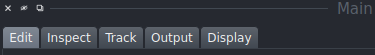

EpiCure 
Installation
You can install EpiCure with pip: pip install epicure in a python virtual environment.
For more precision about the installation, see the Installation page.
Using EpiCure
Through Napari interface (recommended)
You can launch EpiCure in Napari by going to Plugins>epicure>Start. It will open an interface at the right side of the window where you can select the files to use.
The first file to choose is the movie containing the epithelial staining. It should be 2D(+time/channel) file.
Input format
EpiCure relies on bioio module to open images, compatible with various formats.
Note that if your file format is not correctly handled by EpiCure, you can first open the image with other plugins and start EpiCure from the opened layer(s). See Start EpiCure page for more details.
The second file is the segmentation of this movie (it should contain only the segmentation) or a TrackMate file (.xml file). It can be a binarized file of the junctions (skeletonized), a labelled file (each cell is filled by a unique number) or the .xml file generated by TrackMate.
Note that if you haven't done the segmentation yet, there's an additional option in EpiCure to directly run EpySeg on the loaded movie.
If the input movie file had already been processed with EpiCure previously (and saved), EpiCure will automatically propose to load the saved file and reload the previous parameters. You can directly click START CURE in this case.
Additionnal options are available to tune it to your usage, please see Start epicure page for more informations.
Then click on START CURE to start the main process.
From python (Notebook, script, test)
While EpiCure is optimized for a graphical usage as its scope relies on easing manual edition of segmentation, there's a possbility to launch it without starting Napari first (or at all). This can be useful for automatic testing or batching some process. See our released notebooks for example of usage or our test files.
Main interface

When you have selected the two files, you can start editing by clicking on the Start cure button. It will open the two movies and open the interface that let you choose the steps to do:
- Edit: clean the segmentation or correct manually errors through EpiCure options

- Inspect: determine cells suspicious of having an error, based on a few morphological or track features, or handle cellular events as divisions

- Track: links the labels from one frame to another to reconstruct the whole cell track.
- Output: measure/display cell or track features, export results to other plugins/softwares

- Display: display additional informations (segmentation skeleton, general informations...) or a spatial grid

- Preferences: to set-up user-specific preferences as keyboard shortcuts

General principle
In EpiCure, the segmented cells are represented as labels: each cell is assigned a unique number, that will be conserved in all time frames that the cell is present. All pixels belonging to the cell are assigned to its value.
They are represented in EpiCure in a Napari Label layer called Segmentation.
Tracks displays the trajectory of each cell by marking its centroid at each time frame. The value of a track is the same as the cell label.
Inspect helps the user to correct the segmentation by flagging some cell that might be wrongly segmented or handling other cellular events as divisions.
EpiCure has several keyboard or mouse shortcuts to allow interactive corrections.
EpiCure shortcuts are linked to the Segmentation layer, so it should be selected in Napari for the shortcuts to work.
Shortcut customisation
You can redefine EpiCure shortcuts to put your favorite keys instead of EpiCure default ones.
For this, open the Preferences option in Napari>Plugins>EpiCure>Edit preferences.
Choose the shortcuts to use and save them.
See the Preferences page for more information.
Restart to activate shortcut configuration
The new shortcut configuration will be active only at the next EpiCure session. If you already have an EpiCure opened, restart it to apply the new shortcuts.
General options
-
Press s to save the current state of the segmentation. The file will be saved in the output folder, named
**imagename**_labels.tifand can be reloaded later. Additional informations specific to EpiCure (cell groups, tracks graph (lineage), suspects) are saved at the same time, in a file named**imagename**_epidata.pkl. When the EpiCure files are re-opened, this file will be reloaded. -
Press h to show/hide the main
EpiCureshortcuts list. Press it several times to go through the different shortcut lists. -
Press a to open a new op-up window that list ALL the EpiCure shortcuts.
-
Press Shift-s to save screenshots of the whole movie, with the current display.
Visualization  shortcuts:
shortcuts:
- The labels (cells) can be displayed as filled areas (put
contourto 0) or only the contour lines can be shown with thecontouroption. Shortcut: Ctrl-c or Ctrl-d to increase (or decrease) thecontoursize. - To see only the current label (the pixels which have the value that is currently active in the
labelfield), check theshow selectedbox on the left panel. - Click on the eye icon next to the
Movielayer to show/hide it. Shortcut: press v to show/hide the movie (visible). - Click on the eye icon next to the
Segmentationlayer to show/hide it. Shortcut: press b to show/hide the segmentation (binary). - Press 5 to switch to zoom/moving mode.
- Press c to see only the movie layer.
- Press g to show/hide a grid to have a spatial repere. See Display documentation for more details.
Additional options
EpiCure also proposes specific options outside of the main pipeline:
- Concatenate EpiCured movies: to combine two movies (from the same original one that was splitted before temporally) already analysed with EpiCure into one big epicured movie. This is usefull for huge movie where the user prefered to split it in sub-movies temporally to reduce the loaded data size and allow for more responsiveness of the interface.
- Segment: by default, EpiCure doesn't perform segmentation to allow for more generability by using already existing solutions. This option links directly EpiCure with napari-epyseg plugin to perform the segmentation directly.